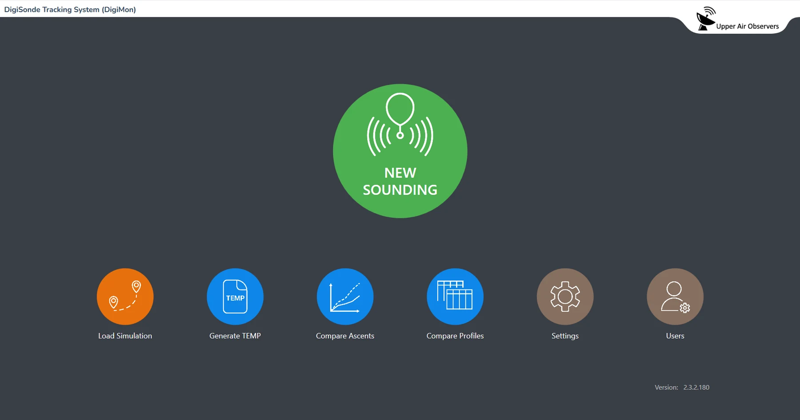
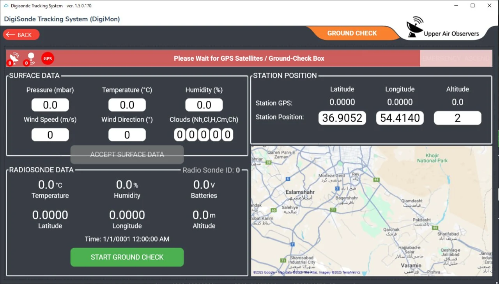
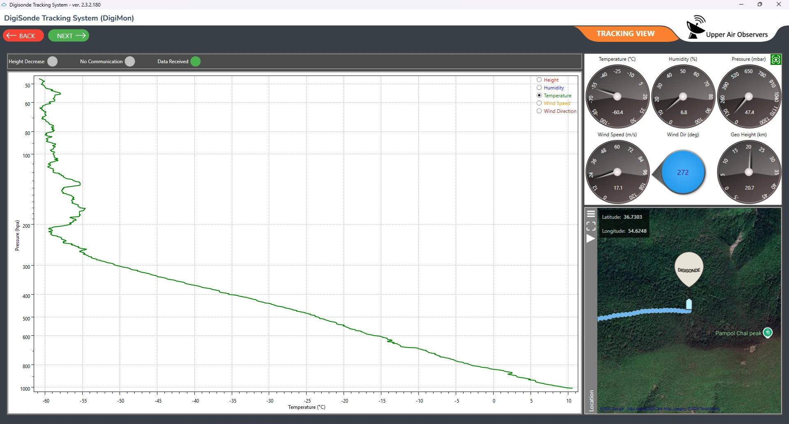
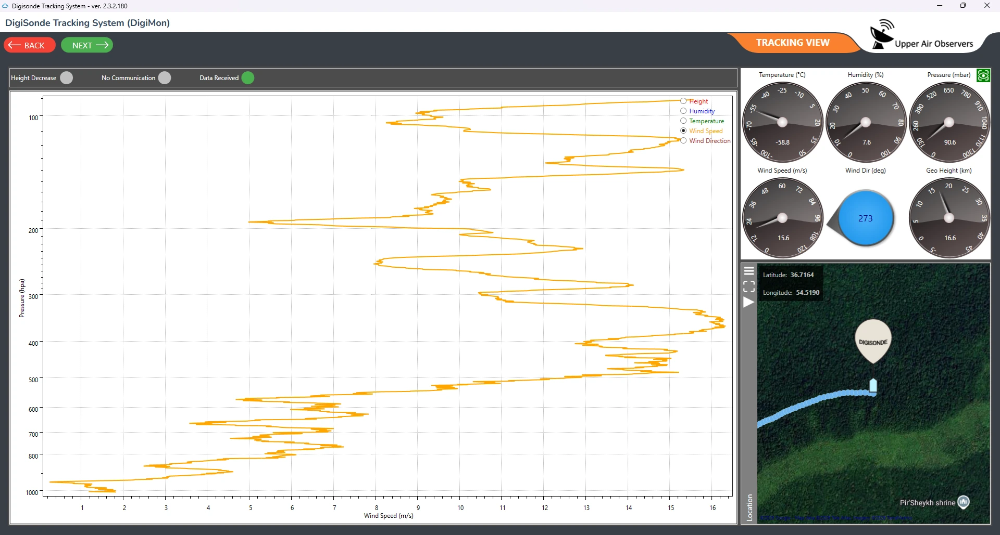
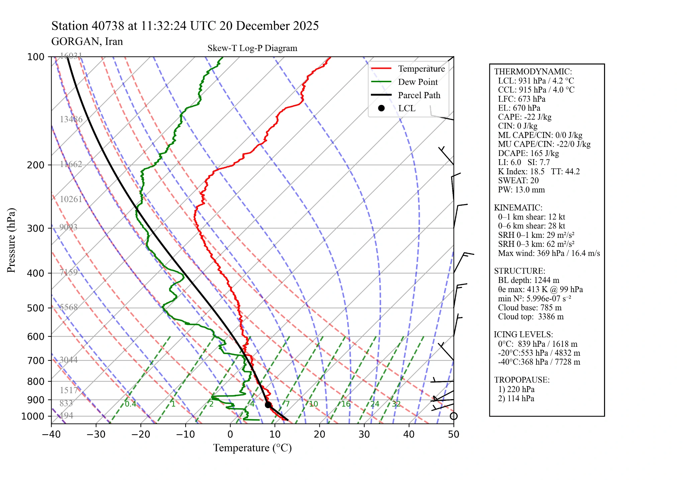

نرمافزار ایستگاه زمینی و مانیتورینگ DIGIMON®
نرمافزار مانیتورینگ دیجیمون
یک مجموعه نرمافزار عملیاتی برای گراند چک، پایش در لحظه تلهمتری، خروجی TEMP و BUFR با استاندارد WMO، تولید پروفایل Skew-T، شبیهسازی صعود ها و تصحیحات پسپردازش.





نرمافزار ایستگاه زمینی و مانیتورینگ DIGIMON®
رابط عملیاتی برای یک عملیات پایش
دیجیمون عملیات رادیوسوند، اعتبارسنجی زمینی و تحلیل پروفایلهای جوی را در یک چرخه یکپارچه جمع میکند. این نرمافزار از گراند چک، پایش بلادرنگ تلهمتری، نمودارهای برخط پارامترها،شبیهسازی پروفایلها، تولید نمودار Skew-T Log-P، تصحیحات پس پردازش و تولید خروجیهای هواشناسی شامل پیامهای TEMP و BUFR با استاندارد WMO پشتیبانی میکند.
- فرآیند اسند جدید
- گراند چک و موقعیت ایستگاه
- شبیهسازی صعود
- تولید خروجی TEMP و BUFR با استاندارد WMO
- تلهمتری بلادرنگ و نمودارهای برخط پارامترها
- تولید پروفایل Skew-T Log-P
- تصحیحات پس پردازش و کنترل کیفیت
- مقایسه صعودها و پروفایلها
- تنظیمات سامانه و کاربران
جریان اندازهگیری
ابزارهای عملیاتی برای پایش، بررسی، مقایسه و گزارشگیری
دیجیمون لایه نرمافزاری عملیاتی سامانه است که گراندچک، پایش تلهمتری، کنترل صعود، فرآیندهای تصحیح و وظایف گزارشگیری را برای سامانه کامل جو بالا بههم متصل میکند.